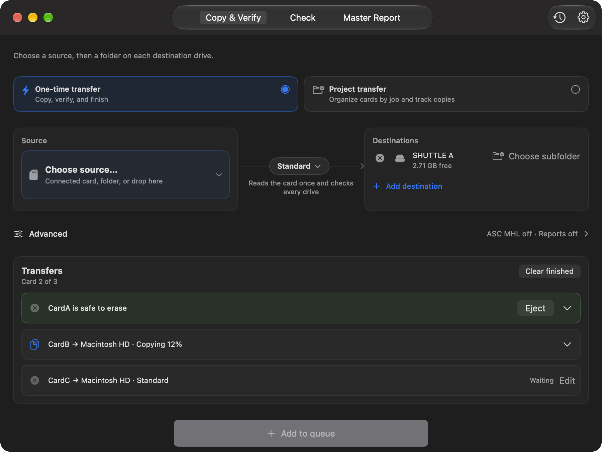
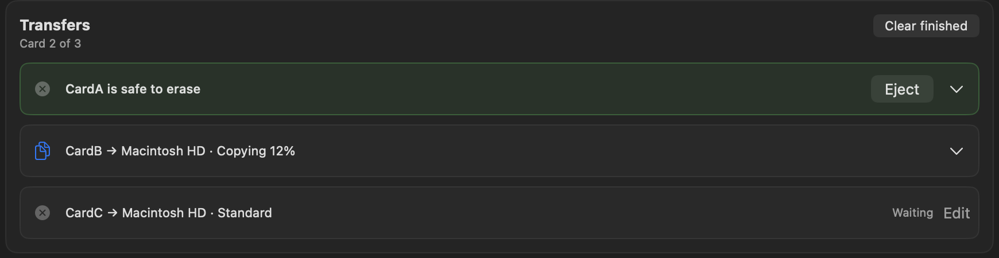

Camera card offloads.
Safe, fast, verified, free.
Needs macOS 15.5 or newer. Runs on Apple silicon and Intel Macs.

Pick the card, pick your drives, press Start. Each card becomes a row that shows its own progress.
Every drive at once
BitMatch reads the card once and writes every drive at the same time, so a second backup doesn't mean reading the card twice.
Checked on the drive
Each copy is read back from the drive itself and compared with the card using SHA-256. Four modes, from a quick copy to byte-by-byte.
Queue your cards
Plug in the next card while one copies. Every card gets its own row with its progress and its result.
Knows your camera
Sony, Canon, ARRI, RED, Blackmagic, Panasonic, Fujifilm, GoPro, DJI, Insta360 and plain DCIM cards, with folders named by camera and card.
Reports for post
PDF, CSV and JSON reports beside every copy, ASC MHL records, and a daily master report.
Free, open and yours
No subscription, no account, no tracking. Signed and notarized by Apple, open source, and it updates itself.
The pro offload app, minus the price.
If you've used a paid offload app, you'll feel at home: several destinations, checksum verification, a card queue, camera-aware folders, reports and ASC MHL.
BitMatch does that for free, in a native app that stays out of your way.

Get BitMatch
brew install --cask bitmatchapp/tap/bitmatch
Signed and notarized by Apple, and it updates itself from inside the app. The first time you use a drive, BitMatch asks once for permission to use your drives. It's beta software from a one-person project: try it with files you don't need first, and keep the card until every drive finishes.